第二章说明，材料相同的设施仍有不同的规格和运行条件。本章继续检验：共同考虑这些条件后，哪些伤亡关联仍保留，增加记录又能改善多少判断。企业据此确定值得准确收集的信息，实际错漏则决定评分能用于什么判断。
3.1 部件经验与联合模型的判断能力
按部件查看同类事故，是整理历史经验的简单起点。我们先检验在部件之外，合用材料、地点和地区等级能增加多少判断信息。2010至2021年收到的1,286份报告用于学习；2022年起收到的264份报告用于评价，其中65份记录伤亡。近期记录曾用于探索，本章结果属于回顾比较。
地区等级沿用报告的分类，描述管线周边建筑与人员聚集情况。常数方法对所有报告都采用早期资料的总体伤亡比例；部件规则采用各部件的伤亡比例。逻辑回归合用四项记录估计伤亡概率；随机森林则按这些条件反复划分报告，综合多棵树的判断。
评价只给模型设施记录，伤亡结果留作核对答案。图 8上方比较同看53份报告的结果，约为264份的五分之一；下方曲线显示查看份数改变时的表现。平均精确率AP概括整体排序，越高表示伤亡报告越集中在前面。
同看53份时森林与部件规则接近，整体排序仍有改善
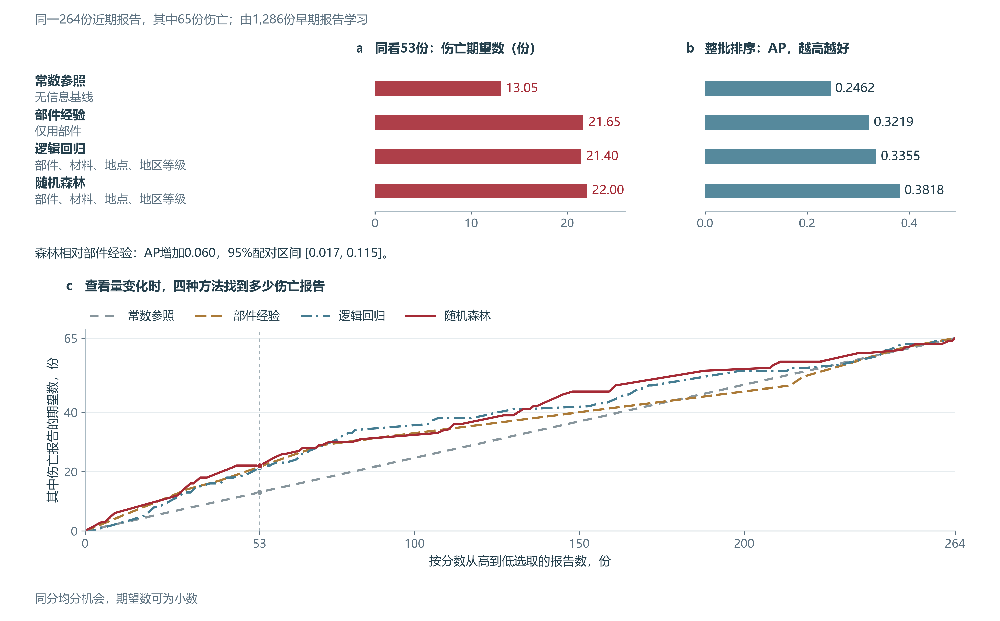


森林的整体排序优于部件规则，AP增量区间为0.017至0.115；但同看53份时，两者只相差约0.35份。部件经验已提供相当一部分线索，采用联合模型应同时考虑实际增加的识别数量。联合模型既增加输入，也改变评分方法，这一比较衡量整套方案的收益。完整树与算法说明
3.2 主管道的共同关联与物理信息价值
第二章发现，同为钢管也有不同的管径和运行压力。本节先检验这些条件与伤亡的共同关联，再比较新增记录的判断收益，确定企业值得优先核实哪些设施资料。
比较沿用第二章2010至2024年的铁、钢、塑料主管道及主管道阀，共693份报告。2010至2021年收件的581份用于拟合，2022年起112份用于评价，其中15份记录伤亡。本节各评分共用这112份报告。
联合回归同时考虑部件、材料、场地、地区等级、管龄、管径和正常压力。共同考虑这些条件后，较小管径、较低正常压力、铁管与私人场地仍对应较高的伤亡优势。
共同考虑设施条件后的伤亡关联
| 条件对比 | 共同关联的方向 | 优势比及95%探索区间 |
|---|---|---|
| 管径4英寸相对2英寸 | 较小管径一侧较高 | 0.530，0.412至0.652 |
| 正常压力40 psig相对20 psig | 较低压力一侧较高 | 0.750，0.663至0.866 |
| 铁管相对钢管 | 铁管较高 | 1.939，1.150至3.133 |
| 私人场地相对公共场地 | 私人场地较高 | 1.914，1.029至3.380 |
来源：共同条件下的估计与运营商重抽样。
优势比比较两种条件的伤亡优势，1表示相同，计算定义与例子见关联方法。管龄和钢塑差异的估计范围跨过1；现有记录中的材料差异需要结合规格与场地解释，调压或换材的效果则需相应干预资料。
材料的关联用于解释设施差别，评分输入则需要比较联合预测表现。为选择便于使用的历史判别工具，我们固定回归方法，比较不同输入组合。早期验证先筛选排序和概率误差接近最佳的方案，再选择字段最少者，得到管径与正常压力两项输入。材料、场地和管龄仍保留作设施解释。完整选择规则与16种方案
图 9在同一112份近期报告中比较三套输入：类别记录、类别加物理记录，以及仅用管径和压力。上方比较整体排序与同看23份时的结果，下方分别显示增加物理记录、减少为两字段后的AP差值及其估计范围。
补充物理记录后同看23份多识别约2份，增量仍有较大误差
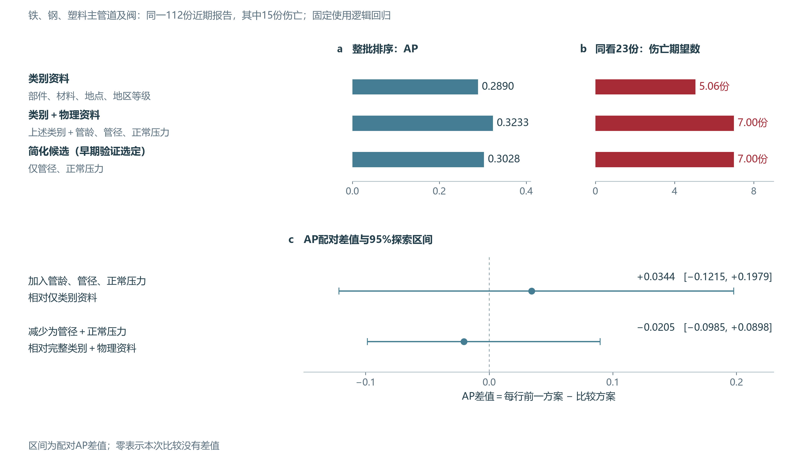


增加物理记录后，同看23份时的伤亡期望数由5.06升至7；简化评分也是7。加入物理记录的收益仍不精确，两字段与完整模型的表现差别也尚不明确。使用这项历史评分时，应优先核实管径、正常压力及单位，并保留材料、场地和管龄用于解释设施差别。各方案指标与差值区间
3.3 模型错漏与企业的信息使用
企业使用评分前，需要知道它会漏掉多少伤亡事故，又会误报多少。我们在早期验证中选择F1最高的29.1%作为分类门槛。F1兼顾伤亡识别比例与高分判断的准确程度；29.1%是这项实验的分界值，并非行业标准或现场保护等级。图 10用这条固定分界评价112份近期报告。
15份伤亡报告识别8份、漏判7份，另有21份误报
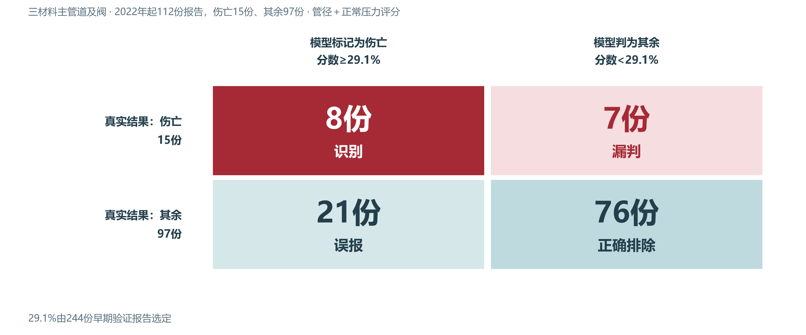


15份伤亡报告中，模型识别8份、漏判7份；29份高分报告中，实际伤亡有8份。因此，按评分查阅历史报告时，还要复核低分记录，避免漏掉其中的伤亡事故。
一份管径12英寸、正常压力10 psig的铸铁主管道报告说明了漏判。两项输入完整，模型最终给出9.83%，低于门槛，实际却记录伤亡。这说明核实输入后，仍需结合原案判断模型遗漏了什么情境。
企业使用这些经验时，应先确认报告属于铁、钢或塑料的主管道及阀，再核实管径、正常运行压力及单位。近期两份阀门报告缺少管径，模型使用训练中位数填补，记录中应注明规格待核实。人员保护继续依据正在执行的任务、燃气状态及实际在场人员；整起事故的评分用于历史比较。计算工具及模型参数可复算同一评分，原分数与校准结果见方法说明。
研究结论
全国事故比较、情境统计和模型实验共同支持三项实际用途。
| 企业任务 | 本研究支持的使用 |
|---|---|
| 复核现存设施 | 结合材料存量和按规模计算的报告率，核对当地铁管、泄漏与维修记录；冬季进一步查看冻土、沉降和支撑条件 |
| 复盘人员伤害 | 第三方损伤后，继续追踪停气、旁通和修漏阶段，分别记录作业人员、燃气状态和受伤时刻 |
| 改进资料采集 | 准确保留管径、正常运行压力及单位；材料、场地和安装维修史用于确认适用范围并解释设施差别 |
资料与计算说明
各项比较分别使用共同的评价报告
分析单位为事故报告，伤亡指至少一人死亡或因伤住院至少一晚。按收件年份，最早拟合期截至2017年，早期验证期为2018至2021年，合并重拟合期截至2021年，后期为2022年起。输入、校准和门槛依据早期资料确定；后期数据此前已被研究，因此所有后期结果均按探索性回顾评价报告。
| 比较用途 | 全部报告 | 最早拟合 | 早期验证 | 合并重拟合 | 后期评价 |
|---|---|---|---|---|---|
| 广范围四方法参照 | 1,550 | 837 | 449 | 1,286 | 264，其中65份伤亡 |
| 三材料主管道及阀的输入比较 | 693 | 337 | 244 | 581 | 112，其中15份伤亡 |
| 物理资料完整的聚类比较 | 621 | 299 | 222 | 521 | 100，其中13份伤亡 |
| 钢塑开挖模型结构比较 | 391 | 169 | 152 | 321 | 70，其中4份伤亡 |
后三项都从2010至2024年发生的相应主管道事故中取样。693份主实验保留缺失，621份是物理资料完整的子集；各方法只在相应的共同评价集内比较，不跨264、112、100或70份的范围排列成绩。主实验与聚类分期 · 钢塑专题分期
当前保存的1,550份报告中，1,011份标为补充报告，其中850份属于较早收件时期；原表缺少逐字段修订时间。输入何时可得尚未逐案核实。693份主实验早期581份均为主管道，后期另有两份主管道阀报告，不能据这一范围估计进户管等部件的差异。
广范围四方法的计算与完整错漏
平均精确率AP在逐组纳入报告时计算已选报告中的伤亡比例，再按新增伤亡报告数加权汇总；本章将它用于比较整批排序的判别能力。
常数参照为早期304／1,286＝23.64%。部件比例规则直接使用各部件早期的伤亡比例。原方案逻辑回归为无惩罚的类别主效应模型，不含交互项，部件、材料、地点和地区等级分别采用七、五、四、四类分析分类。少量部件归入其他类，铜和球墨铸铁归入其他材料。
原方案回归计算z＝截距＋部件项＋材料项＋地点项＋地区等级项，再计算p＝1／[1＋exp(−z)]。参照类别为主管道、钢、公共地点和3级地区，参照项系数为0。它与本章物理输入比较的L2模型分别命名。
森林相对部件规则的AP差值95%区间为0.017至0.115，原方案回归相对部件规则的增量区间跨零。
固定门槛分类与整批排序分别评价。按早期确定的各自门槛，原方案回归识别33份伤亡、误报47份；森林识别34份、误报76份。原方案回归少识别1份，同时少出29份误报。
| 方法 | AP | 前53份伤亡期望数 | 正确识别 | 误报 | 漏判 | 正确判为其余 |
|---|---|---|---|---|---|---|
| 常数方法 | 0.2462 | 13.05 | 65 | 199 | 0 | 0 |
| 部件比例规则 | 0.3219 | 21.65 | 62 | 187 | 3 | 12 |
| 原方案逻辑回归 | 0.3355 | 21.40 | 33 | 47 | 32 | 152 |
| 随机森林 | 0.3818 | 22.00 | 34 | 76 | 31 | 123 |
图 S16保留各门槛对应的矩阵和精确率、召回率曲线。精确率为模型判为伤亡的报告中实际伤亡的比例，召回率为实际伤亡报告中识别出的比例。早期以两者调和平均F1最大值选择门槛，部件规则、原方案回归和森林分别为13.64%、23.56%和23.37%。常数分数与门槛均为23.64%，全部判为伤亡；具体分类使用未四舍五入的分数与门槛。
固定门槛下，森林比原方案回归少漏判1份、多误报29份
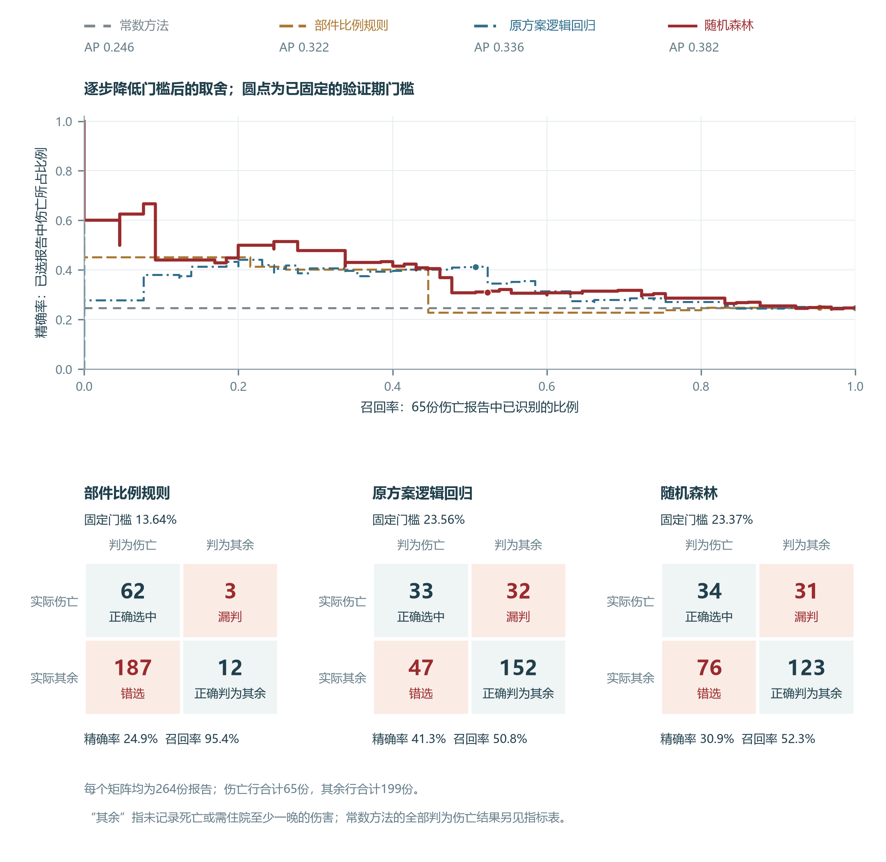


固定选取53份仅作同量比较，未据此确定企业实际工作量。同分组只选一部分时，期望伤亡份数等于已完整选中的伤亡份数，加剩余名额乘以同分组伤亡比例。例如部件规则为17＋12×12／31＝21.65份。四方法指标 · 逐份预测 · 累计曲线复算
完整决策树与叶节点比例
决策树按条件逐层划分训练记录，终点称为叶节点。图 S17是原随机森林的第一棵完整树，保留4个问题和5个叶节点。从左向右沿“是”或“否”进入终点，叶节点饼图的深红份额表示该组训练记录中的伤亡比例，也就是这棵树对同条件报告给出的概率。
第一棵树按部件和材料分组，叶节点给出伤亡比例
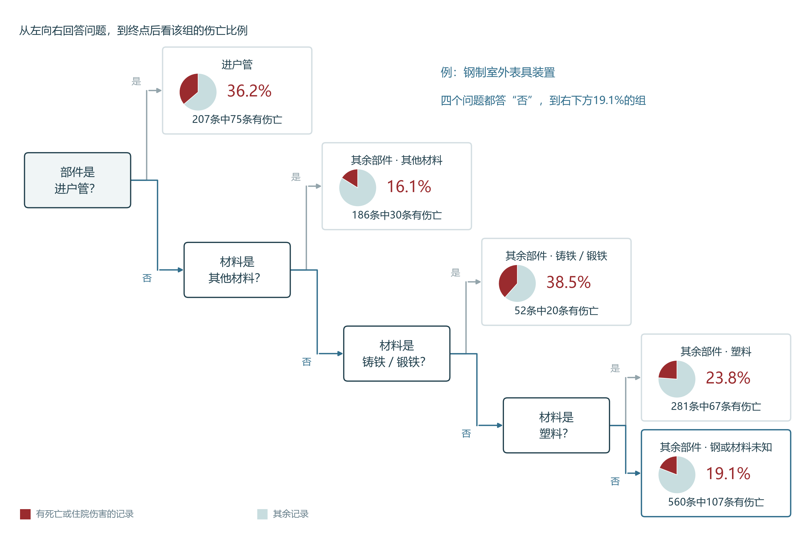


这棵树先分出进户管，再在其余部件中按材料细分，材料分数因此只适用于进户管以外的部件。钢制室外表具／调压装置依次回答四次“否”，进入右下方叶节点；560条训练记录中107条有伤亡，概率为107／560＝19.11%。图中按抽样出现次数计条，同一原始报告可重复出现。
每棵树从1,286份早期报告中有放回抽取1,286次，第一棵实际包含830份不同报告。不同树的抽样及候选条件不同；森林使用250棵树，最大深度4，叶节点最小样本数25，拟合种子20261107。对同一报告，各树分别给分后取算术平均。图 S18显示钢制室外装置的250个逐树分数，平均为21.76%；柱形合计为树数，表示树间差异，不是概率的置信区间。
250棵树对同一事故给分，平均后得到森林概率
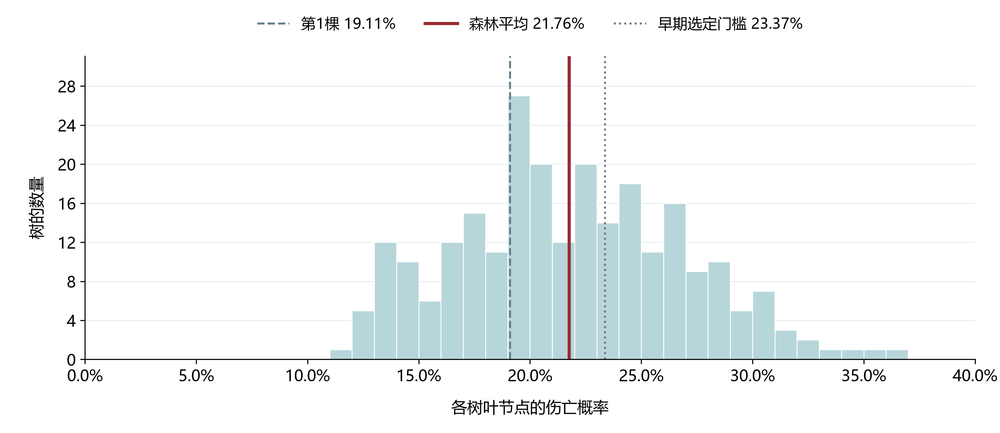

同案报告编号为20220002，按后期报告编号升序选取。其私人地点、3级地区与钢制室外装置输入，使原方案回归得到20.08%，森林得到21.76%。图 S19同时列出常数、部件规则及各自门槛。原案中的车辆碰撞、8名居民疏散和10:35阀门止漏用于解释具体核对事项；本章模型以整批报告评价识别能力。
同一宗室外装置事故的输入、分类与保护核对
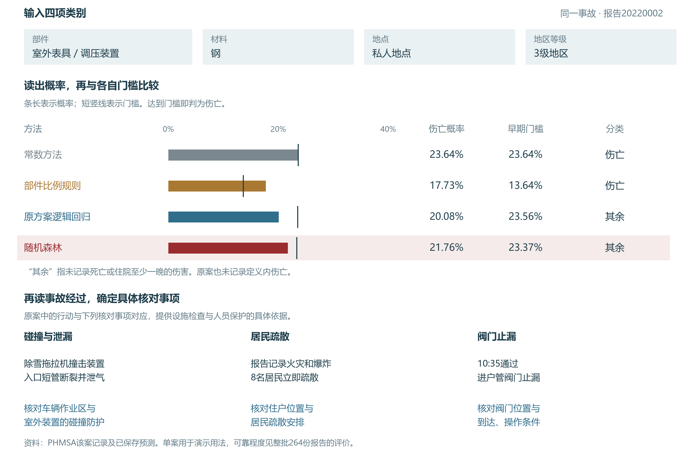


该案发生于2021年12月、2022年1月收件，按收件年进入后期评价。其无惩罚回归分数20.08%与旧固定L2回归的21.66%分别记录。完整树节点 · 逐树分数 · 原案与分数 · 原流树PNG · 原流树PDF

原四类资料消融与概率核对
原四类资料消融使用1,286份早期及264份后期报告，固定L2逻辑回归C＝0.05。图 S20保留部件、材料、地点、地区等级的全部15种非空组合；实心方块表示采用该项，圆点为AP，右列为前53份伤亡期望数。这里的仅部件回归与历史部件比例规则分别计算，也与本章693份范围、C＝0.2的物理输入实验分开。
15种输入组合使用同一种L2回归，比较总体排序与前53份
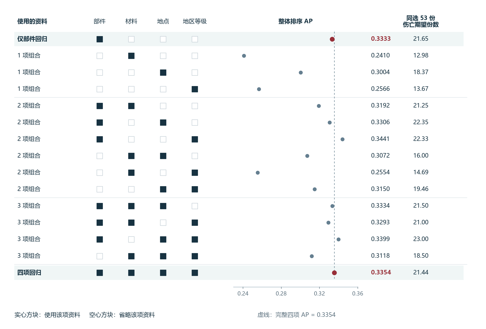


四项回归相对仅部件回归的AP增加0.0022，95%区间为−0.0379至0.0447。两者前53份伤亡期望数分别为21.44和21.65份。图 S21进一步显示，加入材料、地点、地区等级后，私人地点伤亡报告平均多入选2.73份，公共地点少入选2.77份，通行权区域少0.16份，运营商场地为0。区间跨零未证明两者等效；场地变化来自三项资料共同加入。
增加资料后整体识别表现接近，入选报告的场地构成改变
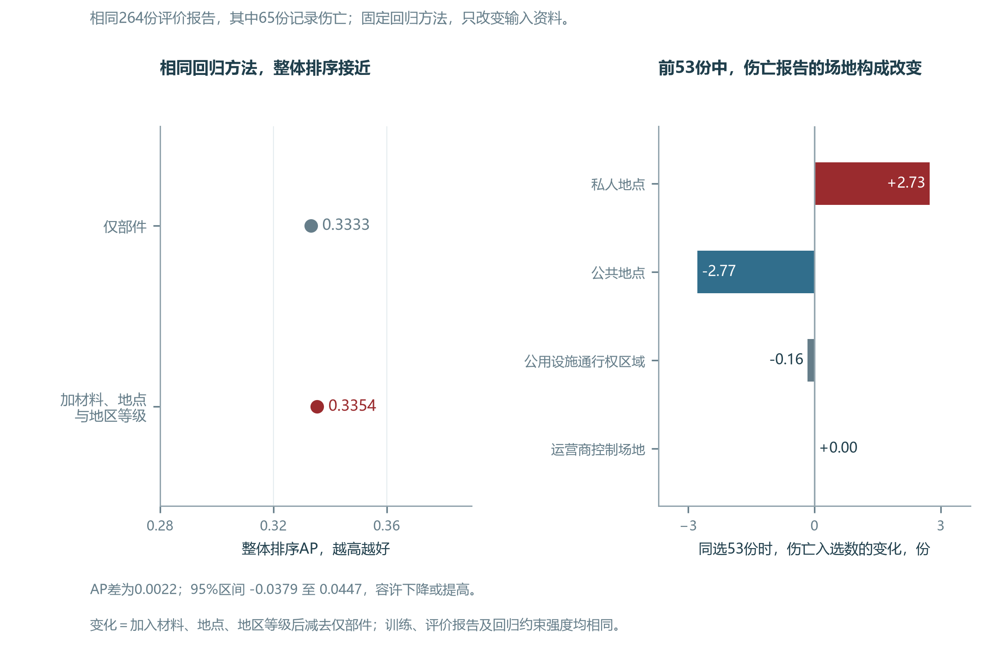


两份公共地点钢制进户管伤亡报告20240034、20250022均为4级地区，分数从仅部件回归的约32.2%降至四项回归的约25.6%，退出前53份。原案分别记载误切仍有燃气的管线，以及公园建筑内泄漏和点火。图 S22再逐项删除输入，四条AP差值区间均跨零，各项独立增益方向仍不确定。
从完整输入中删去一项，AP差值区间均跨零
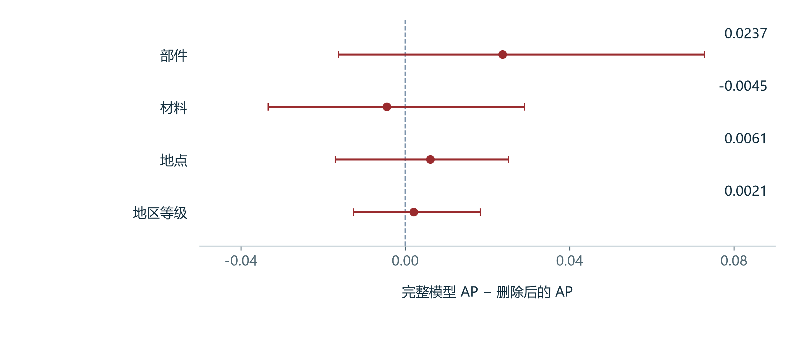


图 S23核对原广范围模型在各分数段的概率量值。空心点为组内平均预测概率，红点为实际伤亡比例，预期份数为概率之和。森林30%至40%组有28份报告，预期伤亡9.22份、实际12份；其他组偏差方向不同。各方法分数组成员可以不同，不能用某一格的绝对差排列整体可靠性。该图未训练新的校准器，与本章两字段模型的校准实验分开。
预测概率与实际伤亡比例在各分数范围内的对照
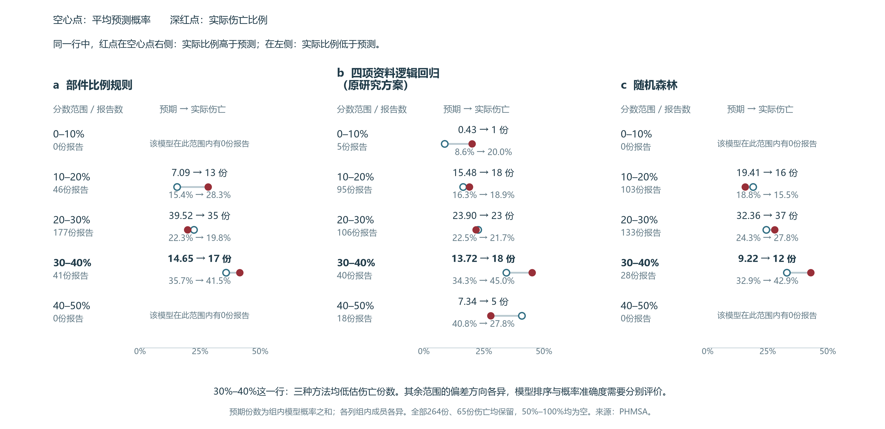


15种类别组合 · 逐项消融区间 · 四项对仅部件区间 · 场地入选变化 · 逐份变化
物理输入的预处理与16种方案
早期验证中的管龄、管径和正常压力输入选择
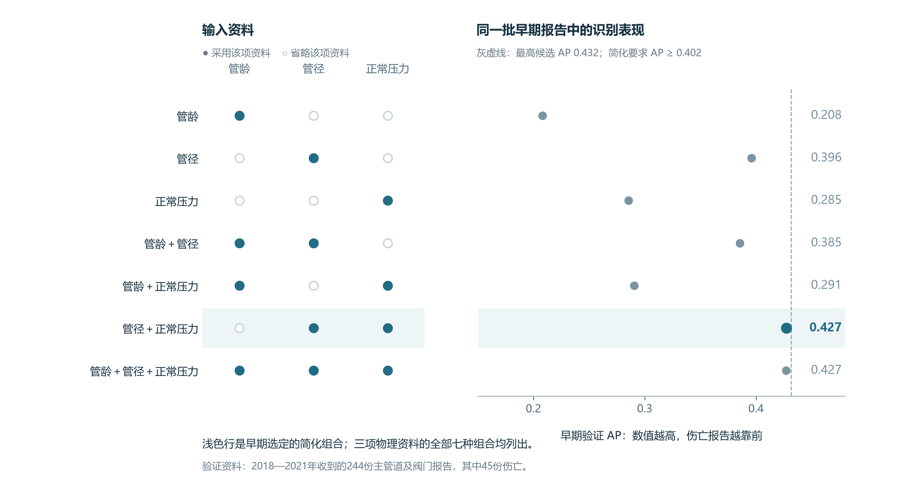


物理输入比较固定L2逻辑回归C＝0.2，不重新扫描算法。管龄为事故年减安装年；管径须大于0，正常压力须非负，无效值记为缺失。管径和压力先作log(1＋数值)变换，再以训练中位数填补并标准化，每个数值输入另设缺失标记。类别采用训练期拟合的独热编码。每次拟合和合并重拟合都重新估计预处理，后期沿用早期所得规则。
| 输入方案 | 字段数 | 早期AP | 早期Brier | 后期AP | 后期Brier |
|---|---|---|---|---|---|
| 常数参照 | 0 | 0.1844 | 0.1535 | 0.1339 | 0.1229 |
| 四项类别 | 4 | 0.3218 | 0.1462 | 0.2890 | 0.1163 |
| 完整七字段 | 7 | 0.4201 | 0.1298 | 0.3233 | 0.1100 |
| 管龄 | 1 | 0.2080 | 0.1553 | 0.2609 | 0.1223 |
| 管径 | 1 | 0.3958 | 0.1366 | 0.2189 | 0.1153 |
| 正常压力 | 1 | 0.2853 | 0.1457 | 0.3462 | 0.1121 |
| 管龄＋管径 | 2 | 0.3854 | 0.1378 | 0.3042 | 0.1119 |
| 管龄＋正常压力 | 2 | 0.2906 | 0.1456 | 0.3299 | 0.1123 |
| 管径＋正常压力，选定 | 2 | 0.4272 | 0.1294 | 0.3028 | 0.1093 |
| 三个物理量 | 3 | 0.4271 | 0.1295 | 0.3142 | 0.1091 |
| 完整模型删管龄 | 6 | 0.4241 | 0.1293 | 0.3230 | 0.1089 |
| 完整模型删管径 | 6 | 0.3193 | 0.1420 | 0.3462 | 0.1097 |
| 完整模型删压力 | 6 | 0.4214 | 0.1325 | 0.3129 | 0.1121 |
| 完整模型删材料 | 6 | 0.4316 | 0.1286 | 0.3336 | 0.1104 |
| 完整模型删地点 | 6 | 0.4084 | 0.1306 | 0.3482 | 0.1087 |
| 完整模型删地区等级 | 6 | 0.4308 | 0.1292 | 0.3248 | 0.1103 |
常数为参照，不参与最简组合选择。选择先找早期验证AP最高项，再保留AP下降不超过0.03、Brier增加不超过0.01的候选，取采集字段最少者；同字段数依次按较低Brier、较高AP及固定名称顺序决定。容差为本研究的简化规则，不是现场伤害容忍标准或统计非劣界值。
两字段原概率与三个物理量的后期AP差为−0.0115，95%区间为−0.0275至0.0008；与完整七字段的差为−0.0205，区间为−0.0985至0.0898。两字段原概率、三物理量、完整七字段在前23份分别识别7、8、7份伤亡，四类别为5.06份。23份为112份中约前五分之一的同量比较，不能与全库的前53份直接比较。早期选择 · 全部后期表现 · 两字段配对比较
完整七字段相对四类别的后期AP增加0.0344，95%区间为−0.1215至0.1979，按原结果表“四类别减七字段”的差值与端点反向计算。区间覆盖负值和正值，正文据此报告本批后期记录的观察增量及有限精度。物理输入配对区间
条件关联与聚类表示的计算
共同条件比较采用同时包含部件、材料、场地、地区等级、管龄、管径和正常压力的逻辑回归，在早期581份报告上估计。伤亡优势等于伤亡概率除以其余概率；条件优势比比较两种条件的伤亡优势，并固定其他输入。例如，管径4英寸相对2英寸的优势比0.530，表示4英寸条件下的伤亡优势约为2英寸条件下的53%。优势比与概率比的含义分别解释，不能直接用来估计调压或换材的保护效果。
完整模型的条件关联
| 条件对比 | 条件优势比 | 95%探索区间 |
|---|---|---|
| 管龄增加10年 | 0.962 | 0.881至1.074 |
| 管径2英寸至4英寸 | 0.530 | 0.412至0.652 |
| 正常压力20至40 psig | 0.750 | 0.663至0.866 |
| 塑料相对钢 | 0.995 | 0.638至1.580 |
| 铸铁锻铁相对钢 | 1.939 | 1.150至3.133 |
| 私人场地相对公共场地 | 1.914 | 1.029至3.380 |
条件关联使用完整七字段模型的581份早期报告，其中126份伤亡，来自133家运营商。每次按运营商有放回重抽样并重新拟合预处理与模型，共1,000次。连续量按原单位比较管龄增加10年、管径2至4英寸、压力20至40 psig；类别采用两类别系数之差。表中区间取重抽结果的2.5%和97.5%分位数。L2系数经过收缩，优势比描述已报告事故中的条件关联，不是换材或调压的干预效应。地区等级4对3的优势比为0.826，区间0.492至1.390。完整条件关联
聚类比较复用第二章的三组结构。早期验证只用299份最早完整记录重新拟合缩放和K-means，随机种子20261109，重复初始化50次；合并重拟合采用原521份早期完整记录的尺度和三组中心。全部621份标签与原记录一致。早期较小管径、较年轻组278份，较大管径、较高压力组192份，高龄、低压力组51份；后期分别44、49、7份。组名描述相对设施特征。
| 输入 | 早期验证AP | 后期AP | 后期Brier |
|---|---|---|---|
| 常数参照 | 0.1892 | 0.1300 | 0.1203 |
| 四项类别 | 0.3560 | 0.2903 | 0.1132 |
| 三个物理量 | 0.4461 | 0.3332 | 0.1054 |
| 仅物理组别 | 0.3132 | 0.2516 | 0.1078 |
| 四项类别＋三个物理量 | 0.4562 | 0.3441 | 0.1069 |
| 四项类别＋物理组别 | 0.3817 | 0.3292 | 0.1074 |
后期组别相对三个物理量的AP差为−0.0816，95%区间为−0.2508至0.0492；四类别加组别相对四类别加物理量为−0.0149，区间为−0.1726至0.1227。区间较宽，本轮没有采用组别替代连续输入。计算组别仍需要管龄、管径和压力三项测量。聚类成绩 · 配对区间 · 三组画像与计数
钢塑开挖专题的共同与独立模型
开挖范围由最终填报原因限定，共391份，作为回顾性专题。共同模型使用材料、管径、正常压力；交互模型增加材料与管径、材料与压力两项交互；各材料独立模型使用相同管径和压力。均为固定L2逻辑回归C＝0.2，沿用已冻结的拟合结果。钢管合并早期155份中5份伤亡，后期41份中1份；塑料早期166份中32份，后期29份中3份。
| 方法 | AP | Brier | 前14份伤亡期望数 |
|---|---|---|---|
| 材料历史比例 | 0.0919 | 0.0557 | 1.45 |
| 含材料的共同模型 | 0.2101 | 0.0574 | 2.00 |
| 允许材料交互的共同模型 | 0.2128 | 0.0609 | 2.00 |
| 钢、塑料独立模型 | 0.2079 | 0.0609 | 2.00 |
交互模型相对共同模型的AP差为0.0027，95%区间为−0.0054至0.0162；独立模型相对共同模型为−0.0022，区间为−0.0158至0.0089。独立模型的Brier比共同模型高0.00344，区间为0.00082至0.00672。三种结构前14份均识别2份伤亡，材料经验参照为1.45份。保留缺失后的后期钢管有41份、1份伤亡；只保留完整物理资料会剩36份且无伤亡，不能据此评价其伤亡识别能力。结构比较指标 · 配对区间
两字段模型的校准、公式与实际错误
正文四格图用于直接读取分类错漏；下图保留同一112份报告的实际概率分布，便于核对哪些分数落在29.1%分界两侧。
每份报告的概率分数与实际分类结果


输入选定后，使用滚动时间窗产生校准训练分数。分别用截至2013、2015、2017、2019年的报告拟合，评价随后两年，每条分数均来自未使用该条结局的模型。最早两个窗用于拟合截距调整及sigmoid，再在244份早期验证报告中与原概率比较。sigmoid是原分数logit的一元L2逻辑回归，C＝1；只有斜率为正且验证Brier至少改善0.001时才采用。方法确定后，以四个滚动窗重估校准参数。
| 概率处理 | 早期验证Brier | 后期Brier | 后期平均概率 |
|---|---|---|---|
| 原概率 | 0.1294 | 0.1093 | 17.7% |
| 仅调整截距 | 0.1295 | 0.1088 | 17.2% |
| sigmoid校准，选定 | 0.1277 | 0.1117 | 16.8% |
sigmoid相对原概率的后期Brier增加0.00245，运营商配对95%区间为−0.00133至0.00743，未显示稳定改善。校准为正斜率的单调变换，原概率与校准概率的AP均为0.3028，前23份均识别7份。实际后期伤亡比例为15／112＝13.4%。
设管径d以英寸计、正常压力p以psig计，sigmoid(x)＝1／[1＋exp(−x)]，冻结公式如下。
zd = (log(1+d) - 1.7662066594046535) / 0.573874227355626
zp = (log(1+p) - 3.6568916650882035) / 1.2604217148490748
eta = -1.5143388539745959 - 0.7182455436745352*zd - 0.5866972415142216*zp
原概率 = sigmoid(eta)
最终概率 = sigmoid(0.3256189758120481 + 1.3183921995906618*eta)
标记条件 = 最终概率 >= 0.29138102310974945
缺失时，变换后的管径和压力分别以训练中位数1.6094379124341003、3.871201010907891填补。训练中两项均无缺失，缺失标记系数为0；后期两份主管道阀缺管径，其分数依赖填补。
分类门槛取早期验证F1最大值，同分时取较高门槛。原概率门槛为0.2860451313019893，最终概率门槛为0.29138102310974945。后期两套分数均产生正确识别8、误报21、漏判7、正确判为其余76份；召回率8／15＝53.3%，精确率8／29＝27.6%。漏判分别为钢4份、塑料2份、铁1份。
计算示例20220016是在管径与压力均已观测的漏判报告中，按报告编号升序选取第一份。其管径12英寸、正常压力10 psig，原概率0.12697323042482372、最终概率0.09830265228463318，实际伤亡。管龄102年保留为复盘资料，该例不改变早期冻结的输入选择。最终系数与校准参数 · 早期选择记录 · 112份分数与分类 · 计算示例 · 示例选取规则
差值区间、补充信息与复算入口
原四方法的AP差值按后期93家运营商配对重抽1,200次。物理输入及校准比较按后期53家、聚类比较按47家运营商配对重抽2,000次，随机种子20261111，各方法共享每次抽样，本次均无单类抽样跳过。钢塑专题按37家运营商重抽2,000次，其中27次因只含单一结局跳过，保留1,973次。预测比较均固定已训练分数，区间不含训练、选参及模型选择的不确定性；多项区间未作多重比较校正，作探索性说明。条件关联的1,000次重抽则每次重新拟合，二者分开解释。
月份保留为铁管自然因素的复盘线索，本轮沿用其未形成稳定额外伤亡判别收益的决定。主成分用于描述输入压缩，计算时仍需原始物理量，本轮主评分不采用主成分。最终事故归因与完整伤亡结果用于确定研究范围和评价标签；当时已确认的活动、点燃、人员位置及措施执行，需要各自的时间和来源记录。完整信息取舍
分析方法 · 计算复核包 ZIP · 运行说明 · 预测复算记录
复核包保存计算代码、分析表、参数和逐份预测，解压后可重新计算50组保存分数。完整重新拟合所需的官方原始附件及取得方式见运行说明。